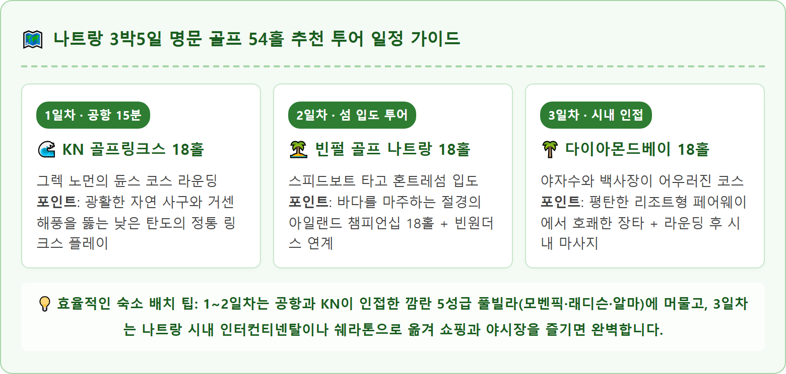
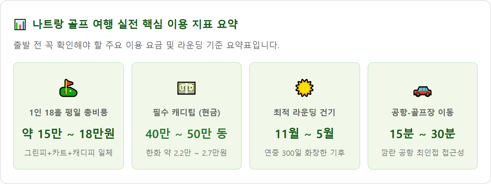

A stunning, wide-angle cinematic golf photography shot of KN Golf Links Cam Ranh in Nha Trang, Vietnam on a sunny dry-season morning. Flawlessly manicured emerald green Paspalum grass fairways curve gracefully through massive natural coastal white sand dunes and native casuarina trees. In the background, the shimmering turquoise blue waters of the South China Sea glitter under a clear tropical sky. A modern white architectural clubhouse is visible on the high ridge. Low-angle perspective highlighting the crisp fairway turf texture, dramatic waste bunkers, and bright ocean horizon. Ultra-high resolution 8k, photorealistic, luxury golf travel style, 1:1 aspect ratio.
베트남 최고의 해변 휴양지로 꼽히는 나트랑(Nha Trang)은 한국 골퍼들에게 가장 각광받는 동남아 골프 여행지 중 하나입니다.
다른 동남아 지역과 달리 삼면이 산으로 둘러싸여 태풍의 직접적인 영향을 거의 받지 않으며, 연평균 기온 26~28℃에 연간 일조일수가 300일을 넘을 정도로 강수량이 적고 화창한 기후를 자랑합니다.
특히 깜란 국제공항 인근에 세계적인 수준의 챔피언십 골프장들이 집중되어 있어 공항 도착 후 15분~30분 이내에 클럽하우스로 진입할 수 있는 압도적인 접근성이 돋보입니다. 늦은 밤 비행기로 출발해 3박5일 동안 매일 서로 다른 3대 명문 코스에서 54홀을 돌고 럭셔리 풀빌라와 마사지, 해산물 미식을 즐기기에 최적화되어 있습니다.
• 최적의 골든 시즌 (11월 ~ 3월): 낮 기온이 25℃~28℃ 안팎으로 선선한 북동 계절풍이 불어와 땀이 나지 않고 쾌적하게 18홀 라운딩을 마칠 수 있는 최고의 황금기입니다.
• 온난 건기 시즌 (4월 ~ 6월): 비가 거의 오지 않는 화창한 날씨가 지속되며 낮 기온이 30℃ 안팎으로 올라가므로, 오전 6시 30분~7시 30분 사이의 얼리버드 티타임이 가장 이상적입니다.
• 짧은 우기 시즌 (9월 ~ 10월): 스콜성 소나기가 간헐적으로 내릴 수 있으나 하루 종일 비가 이어지는 경우는 드물며, 비수기 프로모션으로 그린피가 저렴하다는 장점이 있습니다.
나트랑의 3대 골프장은 각기 뚜렷한 설계 콘셉트와 지형적 매력을 지니고 있습니다. 정통 링크스부터 아일랜드 리조트, 산과 바다가 만나는 복합형 코스까지 다채로운 플레이를 경험할 수 있습니다.
| 골프장명 | 규모 / 홀 수 | 코스 설계자 (Architect) | 잔디 품종 | 코스 특징 및 난이도 |
|---|---|---|---|---|
| KN 골프링크스 깜란 (KN Golf Links Cam Ranh) |
27홀 / 파 108 • 듄스(18홀): 7,152yd • 오아시스(9홀): 3,500yd |
그렉 노먼 (Greg Norman) |
Zoysia (페어웨이) TifEagle (그린) |
아시아 최고 명문 링크스. 거대한 자연 사구와 거센 바닷바람, 깊은 웨이스트 벙커. 난이도 상급. |
| 빈펄 골프클럽 나트랑 (Vinpearl Golf Nha Trang) |
18홀 / 파 71 6,787 yards |
IMG 디자인 그룹 (IMG Design) |
Seashore Paspalum (전 구역 균일 식재) |
혼트레 섬에 조성된 아일랜드 코스. 바다 조망과 푸른 계곡의 절묘한 조화. 난이도 중상급. |
| 다이아몬드베이 골프클럽 (Diamond Bay Golf Center) |
18홀 / 파 72 7,244 yards |
앤디 다이 (Andy Dye) |
Platinum Paspalum (카펫 잔디) |
나트랑 시내 20분 거리. 야자수 숲과 하얀 모래사장, 바다를 낀 평지형 휴양 코스. 난이도 중급. |
2018년 개장한 KN 골프링크스는 개장 직후 아시아 베스트 신규 코스로 선정되며 세계적인 명성을 얻은 나트랑 골프의 상징입니다.
깜란 반도의 8km에 이르는 롱비치 해안 사구 지형을 원형 그대로 살려 설계되었으며, 나무가 거의 없고 거친 모래 언덕과 자생 관목, 그리고 강한 바닷바람이 코스를 방어합니다.
시그니처 홀 (10번 홀, 파4, 405m): 클럽하우스 가장 높은 능선에서 남중국해 푸른 바다를 정면으로 바라보며 티샷을 날리는 절경의 내리막 홀입니다. 우측 전체가 거대한 천연 사구 웨이스트 벙커로 둘러싸여 있어 바람의 세기와 방향을 정확히 읽고 페어웨이 좌측 안전지대를 지켜내는 전략적인 티샷이 요구됩니다.

빈펄 골프 나트랑은 나트랑만 한가운데 떠 있는 혼트레(Hon Tre) 섬에 조성된 럭셔리 아일랜드 골프장입니다.
육지 선착장에서 골프장 전용 고속 스피드보트를 타고 약 7분간 푸른 바다를 가르며 섬으로 들어서는 순간부터 특별한 VIP 대우를 받는 기분을 선사합니다.
세계적인 코스 설계사 IMG가 디자인한 18홀 코스는 800m에 이르는 순백의 모래 해변과 굴곡진 산자락을 따라 레이아웃되어 있습니다. 거의 모든 홀에서 반짝이는 바다를 조망할 수 있으며, 최고급 패스팰럼 잔디가 전 구역에 융단처럼 깔려 있어 최상의 디봇 타구감을 제공합니다.
나트랑 시내에서 남쪽으로 차로 불과 20분 거리에 위치한 다이아몬드베이는 편리한 접근성과 합리적인 그린피로 실속파 골퍼들에게 최고의 인기를 누리는 곳입니다.
웅장한 산맥과 다이아몬드베이 해변 사이에 자리 잡아 병풍처럼 둘러싸인 산세와 시원한 바다를 동시에 품고 있습니다. 지형이 완만하고 페어웨이가 넓어 드라이버 티샷에 부담이 적지만, 군데군데 입을 벌리고 있는 자연 습지와 워터 해저드가 스코어 관리를 까다롭게 만듭니다.
특히 바다를 향해 티샷을 날릴 수 있는 드라이빙 레인지와 나이트 골프 시설이 완비되어 있어, 늦은 오후 여유로운 9홀 라운딩이나 연습을 즐기기에도 안성맞춤입니다.
베트남 나트랑 골프는 1인 1캐디 시스템이 기본 원칙입니다. 캐디가 골프백을 전담 관리하고 그린 라이를 봐주며 우산 서포트까지 제공합니다.
| 구분 항목 | KN 골프링크스 | 빈펄 골프 나트랑 | 다이아몬드베이 | 지불 방식 및 안내 |
|---|---|---|---|---|
| 평일 그린피 (18홀) | 약 3,100,000 VND (한화 약 16.8만원) |
약 2,900,000 VND (한화 약 15.7만원) |
약 2,400,000 VND (한화 약 13.0만원) |
골프 부킹 에이전시 사전 결제 기준 (카트·캐디피 포함) |
| 주말 그린피 (18홀) | 약 3,900,000 VND (한화 약 21.1만원) |
약 3,700,000 VND (한화 약 20.0만원) |
약 3,000,000 VND (한화 약 16.2만원) |
토·일 및 베트남 공휴일 요금 적용 |
| 전동 카트비 | 2인 1카트 포함 (1인 단독 시 추가금) |
2인 1카트 포함 (스피드보트 왕복 포함) |
2인 1카트 포함 (페어웨이 진입 가능) |
기상 상황에 따라 페어웨이 진입 여부 결정 |
| 캐디피 (Caddie Fee) | 기본 패키지 포함 | 기본 패키지 포함 | 기본 패키지 포함 | 1인 1캐디 기본 배정 |
| 캐디팁 (Caddie Tip) ★ 현장 현금 필수 |
400,000 ~ 500,000 VND (한화 약 2.2~2.7만원) |
400,000 ~ 500,000 VND (한화 약 2.2~2.7만원) |
400,000 VND (한화 약 2.1만원) |
18홀 종료 후 캐디에게 직접 베트남 동 현금 지급 (달러 시 $15~$20) |

나트랑 골프 여행 시 티타임 예약은 국내 골프 부킹 전문 여행사(에이전시)를 통하는 것이 가격과 편의성 면에서 절대적으로 유리합니다.
개별 골프장 공식 홈페이지나 현장 워크인(Walk-in) 가격은 정가(비회원 요금)가 적용되어 1인당 20만 원을 훌쩍 넘지만, 에이전시 특가 패키지를 이용하면 25~35% 저렴한 단체 특가를 적용받을 수 있습니다.
또한 전용 차량과 기사(공항 픽업-골프장-호텔 이동)를 원스톱으로 묶을 수 있어 이동 스트레스가 전혀 없습니다.
해외 골프 여행에서 골프백 위탁 수하물 규정은 항공사마다 상이하므로 발권 전 반드시 확인해야 합니다.
| 항공사 구분 | 골프백 무료 위탁 규정 | 초과 수하물 규정 및 주의점 |
|---|---|---|
| 대한항공 / 아시아나 (대형 국적기 FSC) |
일반 수하물 1개 + 골프백 1개 무게 합산 23kg 이내 무료 |
합산 무게 23kg 초과 시 추가 요금 부과. 32kg 초과 시 탑승 불가 |
| 제주항공 / 진에어 / 티웨이 (국내 저비용 LCC) |
기본 위탁 수하물 15kg 기준 골프백 포함 시 사전 수하물 구매 필수 |
현장 공항 카운터에서 초과 요금 지불 시 비용 과다. 출국 24시간 전 온라인 사전 수하물(5~10kg) 추가 추천 |
| 비엣젯 항공 (VietJet) | 기본 무료 수하물 없음 (0kg) | 항공권 예약 시 위탁 수하물 20kg~30kg 및 스포츠 장비 옵션 필수 선택 |
기분 좋은 18홀 라운딩을 성공적으로 마친 후에는 나트랑 특유의 풍요로운 휴양이 기다립니다.
• 깜란 5성급 풀빌라 힐링: KN 골프장 주변 깜란 해변에는 모벤픽, 래디슨블루, 퓨전리조트 등 세계적인 5성급 리조트들이 즐비합니다. 전용 프라이빗 풀에서 시원한 코코넛 주스를 마시며 수영을 즐기고, 90분 천연 아로마 전신 마사지(약 3만~4만원 선)로 뭉친 근육을 완벽히 이완할 수 있습니다.
• 나트랑 시내 씨푸드 & 야시장 투어: 저녁에는 나트랑 시내로 이동하여 현지 유명 해산물 레스토랑(라이씨푸드, 촌촌킴, 동호관 등)에서 신선한 랍스터 버터구이와 칠리 크랩, 모닝글로리 볶음을 시원한 사이공 맥주와 함께 즐겨보세요. 식사 후 화려한 야시장과 야경 명소인 세일링클럽에서 낭만적인 밤을 마무리할 수 있습니다.
• 여권 유효기간 얼마 남았을 때 재발급해야 하나 — 해외여행 6개월 룰과 자동출입국심사(SES) 등록 방법
• 가을·겨울철 결로 생기는 집 체크리스트 — 원인별 환기 요령과 결로방지 페인트 vs 단열 시공 비용 비교